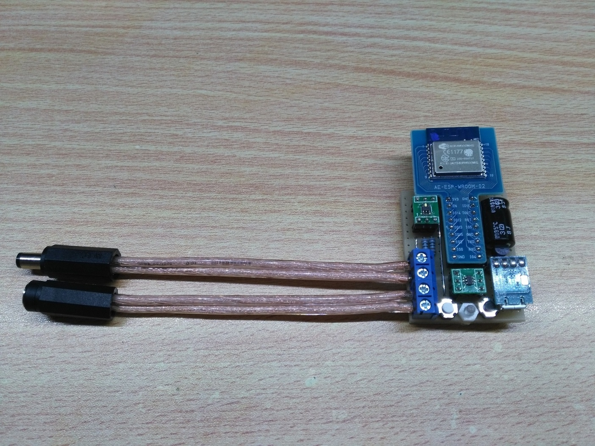
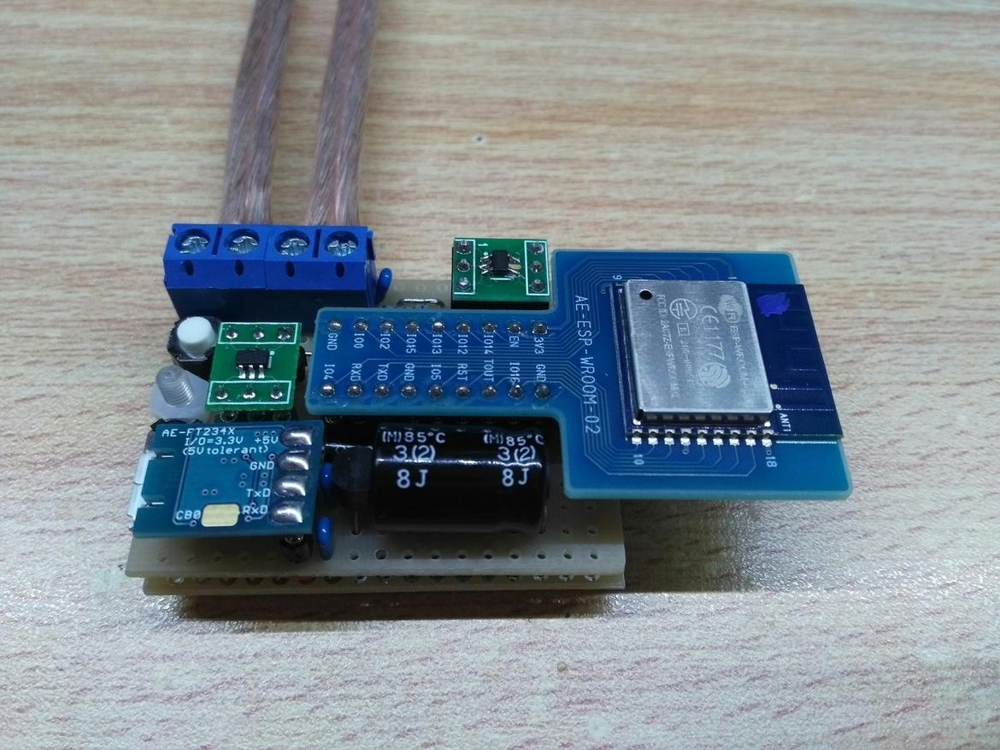
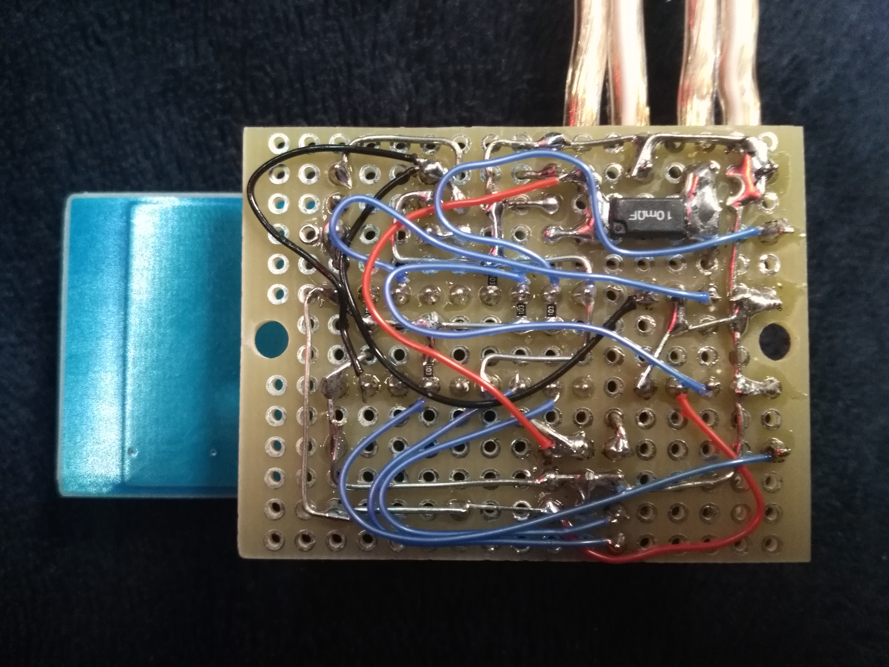

Sinatraでアプリケーションを作る
概要
格安WiFiモジュールESP-WROOM-02を使って電流を計測してそれを受信し表示するアプリケーションを作りました。
見た目
ちょっとした計算をしてレポートとして表示しています。

電流計測機器
ここの記事で紹介しているものを使いました。
5~30VほどのDCケーブルに中継することでその電圧と電流を計り、データをWiFiでサーバーに送ります。
  
環境
- Windows10 & Cygwin
- ruby 2.2.4p230 (2015-12-16 revision 53155) [x86_64-cygwin]
- gem 2.6.1
- SQLite 3.11.1 2016-03-03
ソースプログラム
必要なソースファイルは以下の３つです。
- app.rb
- views/layout.erb
- views/index.erb
app.rb
Sinatraを動かしているメインファイルです。
require 'sinatra'
require 'sinatra/reloader'
require 'active_record'
ActiveRecord::Base.establish_connection(
"adapter" => "sqlite3",
"database" => "./PowerStation.db"
)
class Samples < ActiveRecord::Base
end
helpers do
include Rack::Utils
alias_method :esc,:escape_html
end
get '/' do
@title = "Power Station"
@samples = Samples.order("id desc").all
@intCurrent = 0
@intPower = 0
Samples.all.each do |sample|
c=sample.currentValue.to_f
v=sample.voltageValue.to_f
@intCurrent += c * 12 / 60 / 60
@intPower += c * v * 12 / 60 / 60
end
erb :index
end
post "/new" do
Samples.create(
{
:deviceName => params[:deviceName],
:currentValue => params[:currentValue],
:voltageValue => params[:voltageValue]
}
)
redirect '/'
erb :index
end
post '/deleteAll' do
Samples.destroy_all
end
post '/delete' do
Samples.find(params[:id]).destroy
endviews/layout.erb
サイト内共通のHTMLヘッダーやフッターはここに書きます。
<!DOCTYPE html>
<html lang="ja">
<head>
<meta charset="utf-8"/>
<title><%= @title %></title>
</head>
<body>
<div><%= yield %></div>
</body>
</html>views/index.erb
実際にブラウザに表示される部分を書きます。
<h1>Power Station</h1>
<h2>Report</h2>
<p>Average : <%= if @samples.length != 0 then @samples.average(:voltageValue).round(3) end %> [V], <%= if @samples.length != 0 then @samples.average(:currentValue).round(3) end %> [A], <%= if @samples.length != 0 then (@samples.average(:currentValue) * @samples.average(:voltageValue)).round(3) end %> [W]</p>
<p>Integrating : <%= @intCurrent.round(3) %> [Ah]</p>
<p>Electrical Energy : <%= @intPower.round(3) %> [Wh]</p>
<h2>Data</h2>
<ul style="height:30em;overflow:scroll;">
<% @samples.each do |sample| %>
<li data-id="<%= sample.id %>">
<button class="deleteCmd" style="cursor:pointer;color:blue;}">delete</button>
<%= sample.created_at %> (<%= sample.deviceName %>) : <%= esc sample.voltageValue %> [V], <%= esc sample.currentValue %> [A]
</li>
<% end %>
</ul>
<h2>Add new</h2>
<form method="post" action="/new">
Device Name:<input type="text" name="deviceName">
Voltage:<input type="text" name="voltageValue">
Current:<input type="text" name="currentValue">
<button type="submit">Post!</button>
</form>
<h2>Delete</h2>
<button class="deleteAll" type="submit">Delete All Data</button>
<script src="https://ajax.googleapis.com/ajax/libs/jquery/1.12.0/jquery.min.js"></script>
<script>
$('.deleteAll').click(function(){
if(confirm('Are you sure to delete?')){
$.post('/deleteAll');
location.href = document.URL;
}
})
$('.deleteCmd').click(function(){
var el = $(this).parent();
if(confirm('Are you sure to delete?')){
$.post('/delete',{
id: el.data('id')
},function(){
el.fadeOut(800);
});
}
})
</script>参考サイト
ドットインストールのレッスンを参考にデータを表示するアプリケーションを作りました。